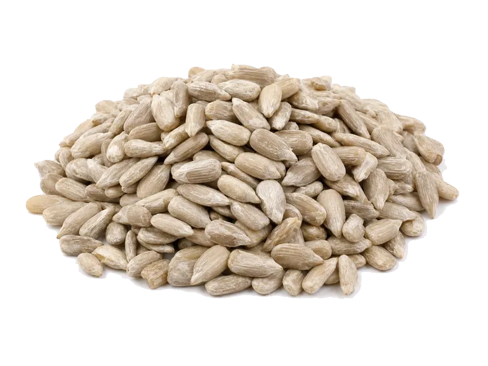

Orzechy
Pestki słonecznika łuskane
Pestki słonecznika łuskane: 21 g białka, 584 kcal, 20 g węglowodanów i 51 g tłuszczu na 100 g. Kategoria: Orzechy.
Kalorie584 kcalna 100 g
Białko / proteiny21 g
Węglowodany20 g
Tłuszcz51 g
Cena (szac.)~6,00 złza 100 g
Ceny zaktualizowano: maj 2026 (szacunek — ceny w popularnych supermarketach)
Porcja: garść (30g)
| Kalorie | 175 kcal |
|---|---|
| Białko | 6.3 g |
| Węglowodany | 6 g |
| Tłuszcz | 15.3 g |
| Cena (szac.) | ~1,80 zł |
Szczegółowe składniki odżywcze na 100 g
| Wartość energetyczna (kalorie) | 584 kcal |
|---|---|
| Białko (proteiny) | 21 g |
| Węglowodany | 20 g |
| Tłuszcz | 51 g |
| Tłuszcze nasycone | 5.5 g |
| Tłuszcze nienasycone | 45.5 g |
| Witaminy i minerały | Witamina E, Magnez, Cynk |
| Współczynnik kcal / 1 g białka | 27.8 |
| Cena produktu (szac. za 100 g) | ~6,00 zł |
| Cena za 100 g białka (szac.) | ~28,57 zł |